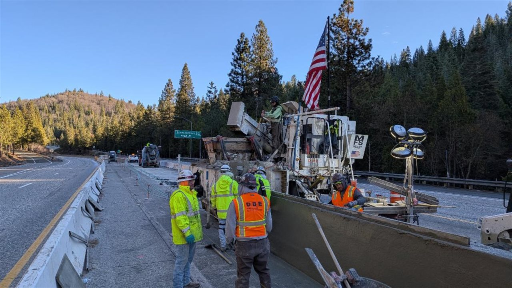

Our source inspection teams include registered engineers and certified technicians with decades of fabrication and quality support experience. Staff are cross-trained for efficient assignment coverage and consistent reporting across plant and shop locations.

Source Inspection Services
S2 Engineering provides complete source inspection services for Caltrans and other transportation agencies. We apply Office of Structural Materials - Materials Engineering and Testing Services (METS) standards to verify fabrication quality, material conformance, and documentation readiness before shipment and installation.
Core Source Inspection Services
METS-Based Scope
- SIQMP development
- Structural Materials Representative
- QAP development
- IQA/QMA audits
- QA/QV services
Certification Coverage
- PCI Level II & III
- ASNT (NDT)
- AMPP (Coatings)
- AWS (Welding)
- ICC (Building Inspection)
- JTCP - Soil and Aggregate, HMA 1 and HMA 2
How We Execute
Fabrication and Plant Oversight
- Precast concrete, structural steel, coatings, and weld inspection support
- Hold-point and witness-point verification at source facilities
- Material certification, traceability, and lot documentation review
- Deficiency reporting and corrective action verification
Quality Documentation Support
- Inspection reporting aligned with SIQMP and project specifications
- QAP and source documentation package development support
- IQA/QMA audit coordination with owner QA and contractor QC teams
- QA/QV records prepared for final acceptance and payment processing
Representative Source Inspection Work

METS QASI execution and reporting

Fabrication verification and hold-point checks

Structural materials QA/QV documentation support

Bridge component source inspection support